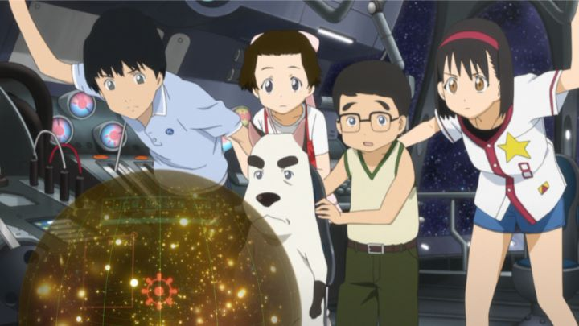

"Welcome to the Space Show" is a 2010 anime film that most anime fans likely never have heard of. The original movie seemed destined to never even get a home video release in North America: it eventually did from GKIDS in 2014, using a pre-produced English dub from a UK release. It's also hard to describe the movie: it crams so much in its 2+ hour runtime, that you'll feel you've watch three or four separate movies at once.Let's start from the beginning of the story: a group of students (ranging from about 5 to 14 years old) are playing outside, when they discover a sick dog. After caring for it, the dog politely thanks them in English. Pochi isn't an Earth dog, but a dog from space, and as a reward, he offers to take them out to space to see it themselves. This results on an epic adventure, mostly surrounding the planet Wan-Bow, and the universe's most popular entertainment program, "The Space Show." Often loosely associated with the also busy 2009 film "Summer Wars," "Welcome the the Space Show" involves a variety of tangent plots. Pochi quickly realizes that bringing the kids back to Earth will be difficult, and tries to manage this without worrying them. Some of the children wander off to explore. Some have to work part-time jobs to earn money to get back to Earth. Some argue and make up with each other. There's also a plot regarding why Pochi was injured to begin with, resulting in a climactic and flashy final battle. If there was ever an example of too much story in a single movie, "Welcome to the Space Show" is it. It feels as if they intended to have a series of television episodes, realized they only had enough content for about five or six, and decided to cram everything into a single theatrical feature. It doesn't help that the movie is as long as it is either. "Space Show" is always interesting, but quickly wears out its welcome.  One of the few ways "Space Show" cleverly uses inspiration is in the visuals. It portrays a wide variety of aliens in space, after all, and uses the opportunity to display fun and colorful characters and environments (mostly featuring, but not limited to, humanoid alien dogs). Some animated vignettes almost cross into Masaaki Yuasa territory. It's a shame that there isn't really a consistent style to follow and better market the movie: the varied visuals don't blend into a cohesive whole, at times further proving that this feels like multiple movies crammed into one. A child with a short attention span will be curious about the movie, but even then I'd be surprised if they could stay awake all the way until the end. "Welcome to the Space Show" desparately needs to be edited down into something shorter, or possibly into separate episodes as an OVA series. On the other hand, the wild abandon is almost impressive, and for a single viewing, it may leave you stunned in amazement.
- "Ani" More reviews can be found at : https://2danicritic.github.io/ Previous review: review_Welcome_to_the_N.H.K. Next review: review_When_Adam_Changes